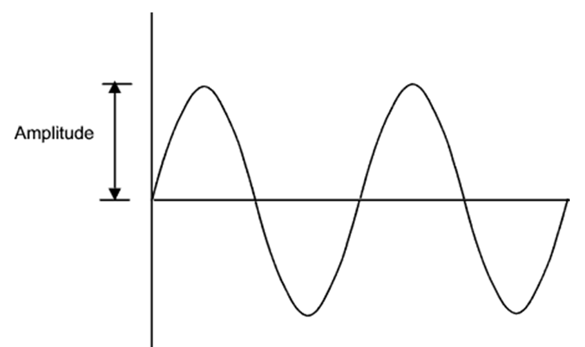
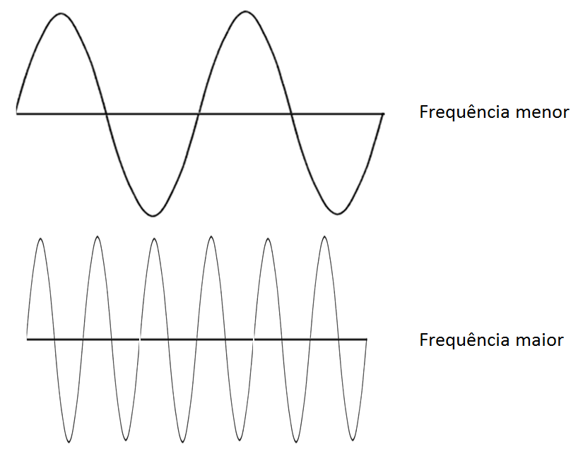
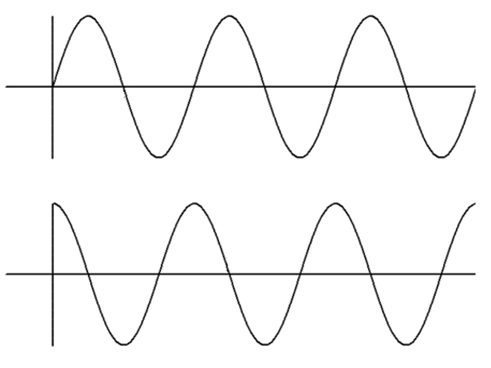
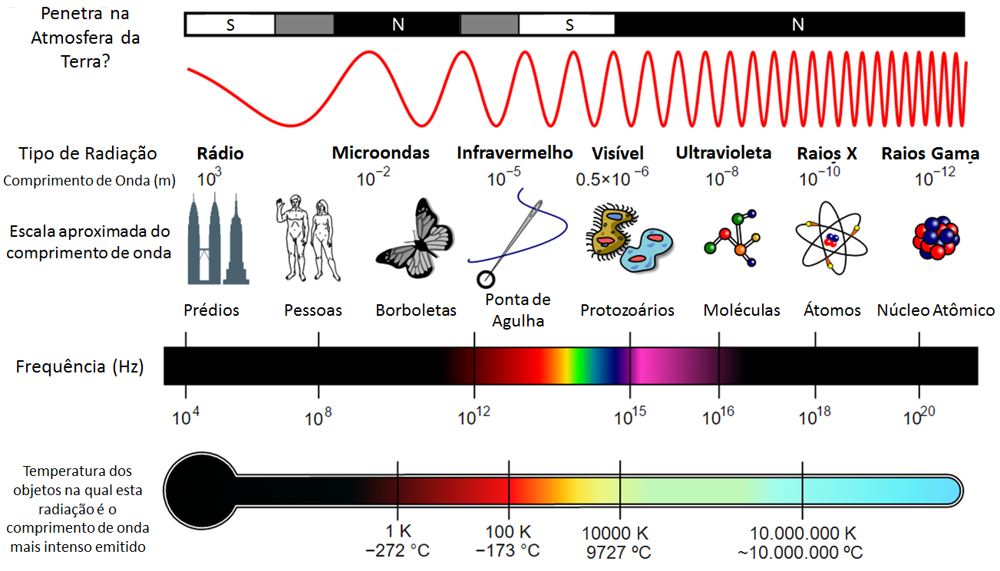
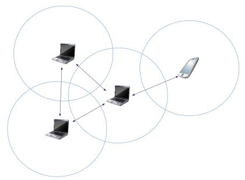
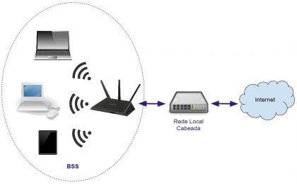
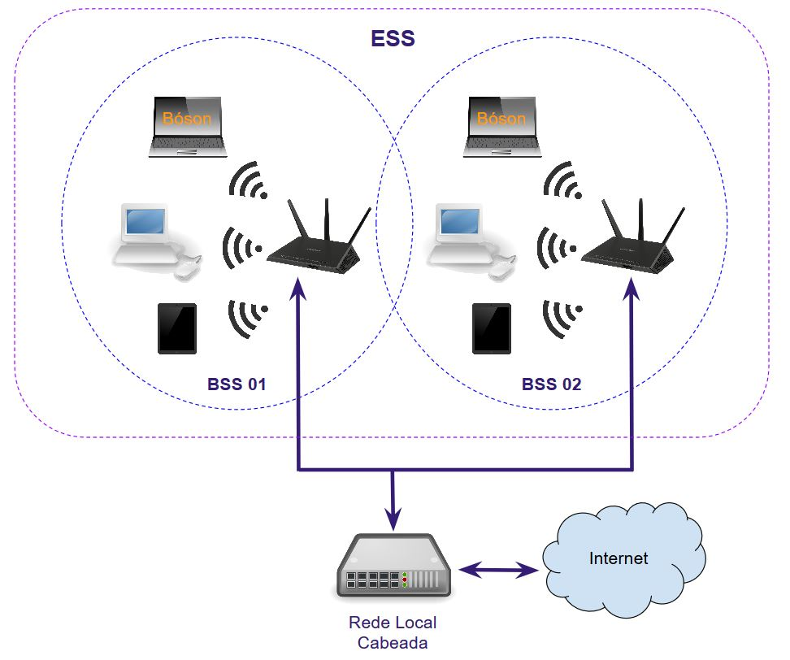

Uma rede sem fios (redes wireless), como o próprio nome já diz, é uma rede de dispositivos, geralmente computadores e dispositivos móveis, que trocam dados entre si, sem o uso de cabos. A rede sem fios se comunicam através de ondas eletromagnéticas.
Basicamente, uma onda eletromagnética é uma oscilação, em fase, dos campos elétricos e magnéticos que se autopropagam pelo espaço livre, em qualquer ponto desse espaço, independente de ter ar ou não (por isso existem comunicações do tipo no espaço, por exemplo).
As ondas eletromagnéticas pode ser classificadas de formas distintas, as três principais são a amplitude, a frequência e a fase.
A amplitude é a "altura" da onda, ou seja, a medida do valor de pico da energia transmitida (potência), quanto maior a amplitude de uma onda, maior será sua energia intrínseca.
Veja o "desenho" da amplitude da onda:
A amplitude pode ser medida, por exemplo, em volts.
A frequência de uma onda se refere ao números de ciclos completos que ocorrem a cada segundo. Por exemplo, se uma onda oscila uma vez por segundo, sua frequência é de mil ciclos por segundo.
Na prática, usamos a unidade de medida Hertz (Hz) para representar a frequência de uma onda, sendo que 1 Hz é um 1 ciclo por segundo.
Assim como outras medidas, usamos prefixos multiplicadores para representar os valores de frequências, até porque na maioria das vezes os Hertz são valores muitos altos, por isso são utilizados o Kilohertz (1000 ciclos por segundo), Megahertz (1000000 de clicos por segundo), Gigahertz (1000000000 de ciclos por segundo) e assim por diante.
Um exemplo seria um sinal de telefone sem fio, que opera na frequência de 900 Mhz, que é 900 milhões de ciclos por segundo.
As frequências de duas ondas distintas podem ser vistas na figura a seguir. Note a diferença de frequência entre as duas representadas, sendo a primeira de frequência mais alta do que a segunda, e portanto, de comprimento de onda (tamanho da onda) menor:
Pode ver que na segunda onda, tem mais oscilações (hertz) no mesmo tempo que a primeira, e portanto, a frequência maior
A fase de uma onda pode ser entendida como a posição relativa da onda em relação a um ponto específico da outra onda, assim, uma onda pode estar em fase com outra (ondas idênticas), ou defasada de x graus, como por exemplo ondas defasadas em 180° (ondas totalmente inversas entre si).
A fase é uma característica muito importante em diversas áreas de pesquisa e tecnologia de ondas eletromagnéticas
Na figura a seguir vemos o deslocamento de fase que ocorre entre duas ondas eletromagnéticas de igual amplitude e frequência, chamado em inglês de “Phase Shift”. Note que a segunda onda inicia em posição diferente da primeira, 90º defasada:
Dessas características, a frequência é a que vamos abordar com mais importância.
O espectro eletromagnético consiste em uma classificação das ondas eletromagnéticas pelo seu comprimento de onda, em ordem crescenete, mostrando a aplicação das diversas frequências mostradas na forma de uma figura ou gráfico, como pode ver a seguir:
Quanto maior a frequência de uma onda eletromagnética, menor será seu comprimento de onda e mais energética ela será, oscilando um número maior de vezes por segundo.
Perceba que a luz visível também é uma forma de onda eletromagnética, assim como as ondas de rádio AM e FM, Raios infravermelhos e ultravioletas, raios-x e radiação gama.
No caso, uma onda de rádio (frequência mais baixa) tem cerca de 1000 metros (por exemplo, rádios AM e FM), já uma onda de uma rede sem fio tem cerca de 12 cm (cerca de 2,4 Ghz). Quando mais encolhemos essa onda, maior a frequência, até chegar ao infravermelho, a luz visível (as cores de tudo são definidas pelas diferenças de frequências da luz) e assim por diante. Não confundir com a amplitude da onda.
E abaixo temos as definições para as siglas apresentadas na tabela anterior, na coluna de Classes:
| Sigla | Significado | Tradução Livre / Aproximada |
|---|---|---|
| γ | Gamma Rays | Raios Gama |
| HX | Hard X-Rays | Raios X Hard |
| SX | Soft X-Rays | Raios X Soft |
| EUV | Extreme Ultraviolet | Ultravioleta Extremo |
| NUV | Near Ultraviolet | Ultravioleta Próximo |
| NIR | Near Infrared | Infravermelho Próximo |
| MIR | Mid Infrared | Infravermelho Médio |
| FIR | Far Infrared | Infravermelho Distante |
| EHF | Extremely High Frequency | Frequência Extremamente Alta |
| SHF | Super High Frequency | Frequência Super Alta |
| UHF | Ultra High Frequency | Frequência Ultra Alta |
| VHF | Very High Frequency | Frequência Muito Alta |
| HF | High Frequency | Frequência Alta |
| MF | Medium Frequency | Frequência Média |
| LF | Low Frequency | Frequência Baixa |
| VLF | Very Low Frequency | Frequência Muito Baixa |
| ULF | Ultra Low Frequency | Frequência Ultra Baixa |
| SLF | Super Low Frequency | Frequência Super Baixa |
| ELF | Extremely Low Frequency | Frequência Extremamente Baixa |
Pode ver que muitas dessas siglas são familiares, como a VHF e UHF, usadas em transmissão de TV.
A arquitetura de uma rede se refere ao modo como os dispositivos são interligados e ao tipo de equipamentos necessários para implementar tal rede.
No caso de redes locais wi-fi (WLAN) há três tipos de arquiteturas básicas: IBSS, BSS e ESS.
Todos os dispositivos que se conectam a uma rede sem fio são denominados Estações (podem ser computadores, celulares, tablets), que podem ser Access Points ou Clientes de Rede, e se comunicam com a rede por meio de uma interface de rede wireless.
A IBSS (Independent Basic Service Set) são dispositivos que se comunicam entre si (apenas clientes, incluindo PCs, notebooks, tablets, smartphones e outros dispositivos). Para isso necessitam apenas de uma interface de rede wirelesse e antenas apropriadas. As WLANs IBSS também são denominadas Redes Ad-Hoc.
Veja abaixo a arquitetura de uma rede IBSS:
A BSS (Basic Service Set) é onde os dispositivos clientes (computadores, impressoras, tablets) são interconectados através do uso de um dispositivo central denominado Access Point (AP), que age como uma espécie de Switch Wireless. Toda rede BSS possui um nome que a identifica, conhecido pela sigla SSID (Service Set Identifier).
Veja abaixo a arquitetura de uma rede BSS:
A ESS (Extended Service Set) é o conjunto de BSSs interconectadas com o intuito de aumentar o alcance e a capacidade da rede wi-fi, podendo consistir em até dezenas de Access Points e conter milhares de hosts conectados. Access Points em um ESS são conectados por meio de um serviço de distribuição (DS ou Distribution System), que pode ser cabeado ou wireless.
Veja abaixo a arquitetura de uma rede BSS:
Pode ver que tem um pedacinho de uma BSS que sobrepõe a outra.
O Service Identifier (Identificado do conjunto de serviço) é o nome de identificação associado a uma rede local sem fio, no padrão 802.11 de redes wireless (Wi-fi).
É utilizado pelos clientes para identificar e se conectar a rede, e diferencia uma rede wireless de outra na mesma localidade física.
Pode ser um ESSID ou BSSID, dependendo da arquitetura da rede local wireless, no geral, chamamos apenas de SSID, cada AP e cliente de rede em uma rede usam o mesmo SSID.
O SSID de uma rede sem fio fica armazenado em um Acess Point. O nome da rede pode ser enviado em broadcast ("anunciado") para ajudar as estações a encontrá-la e se conectarem.
É possível configurar o AP/roteador para não realizar esse broadcast, e inclusive ocultar o nome da rede.
O SSID é uma string de texto e números com no máximo 32 caracteres, case-sensitive. Roteadores banda-larga possuem um nome padrão para a rede sem fio, que pode (e deve) ser alterado durante sua configuração, por razões de segurança.
Para se conectar a uma rede sem fio, os PCs, smartphones, tablets, etc. varrem as redes sem fio locais em busca de dispositivos que estejam anunciando seus SSIDs, e então mostram ao usuário uma lista de nomes disponíveis. Então, o usuário pode selecionar a rede à qual quer se conectar, escolhendo um dos SSIDs da lista.
A conexão pode ou não usar opções de segurança, como uma senha, que deverá ser fornecida caso requisitada para que seja possível conectar-se à rede escolhida. Na maioria dos casos a opção de segurança é habilitada.
É possível salvar as redes sem fio em seu dispositivo cliente, de modo a realizar a conexão automática do dispositivo sempre que estiver na área de alcance da rede identificada.